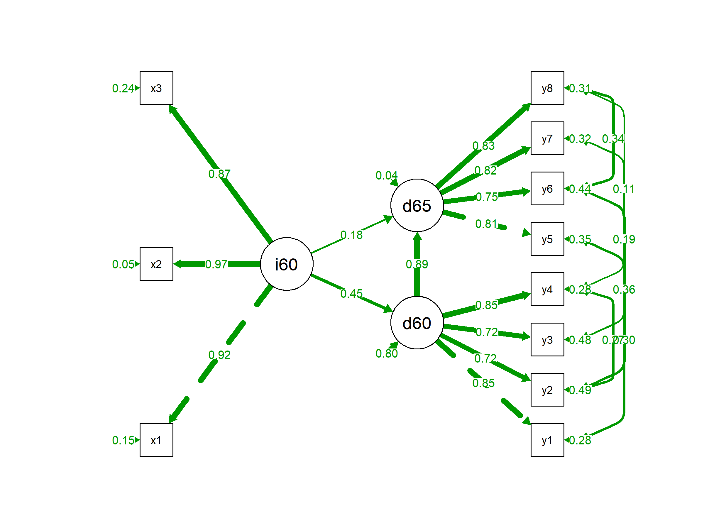

install.packages("lavaan")
install.packages("semPlot")结构方程模型 (SEM) 完全指南
R包
统计模型
因果推断
使用 lavaan 包构建测量模型与结构模型，路径图可视化与拟合指数解读。
简介
结构方程模型 (Structural Equation Modeling, SEM) 是一种强大的多元统计分析技术，它结合了因子分析（测量模型）和路径分析（结构模型），允许研究者同时检验观测变量与潜变量之间、以及潜变量之间的复杂关系。
在 R 语言中，lavaan (Latent Variable Analysis) 是最流行的 SEM 包，它语法简洁且功能全面。semPlot 包则常用于绘制路径图。
SEM 的核心组成
- 测量模型 (Measurement Model)：描述潜变量如何由观测指标测量
- 结构模型 (Structural Model)：描述潜变量之间的因果/相关关系
graph LR
subgraph 测量模型
X1 --> F1[潜变量1]
X2 --> F1
X3 --> F1
end
subgraph 结构模型
F1 --> F2[潜变量2]
end
subgraph 测量模型2
F2 --> Y1
F2 --> Y2
end安装
library(lavaan)
library(semPlot)实例数据
我们将使用 lavaan 自带的 PoliticalDemocracy 数据集，该数据集包含了 1960 年和 1965 年各国的工业化程度与政治民主程度的数据。
data(PoliticalDemocracy)
head(PoliticalDemocracy) y1 y2 y3 y4 y5 y6 y7 y8 x1
1 2.50 0.000000 3.333333 0.000000 1.250000 0.000000 3.726360 3.333333 4.442651
2 1.25 0.000000 3.333333 0.000000 6.250000 1.100000 6.666666 0.736999 5.384495
3 7.50 8.800000 9.999998 9.199991 8.750000 8.094061 9.999998 8.211809 5.961005
4 8.90 8.800000 9.999998 9.199991 8.907948 8.127979 9.999998 4.615086 6.285998
5 10.00 3.333333 9.999998 6.666666 7.500000 3.333333 9.999998 6.666666 5.863631
6 7.50 3.333333 6.666666 6.666666 6.250000 1.100000 6.666666 0.368500 5.533389
x2 x3
1 3.637586 2.557615
2 5.062595 3.568079
3 6.255750 5.224433
4 7.567863 6.267495
5 6.818924 4.573679
6 5.135798 3.892270变量说明： - x1-x3: 1960年工业化指标 - y1-y4: 1960年民主程度指标 - y5-y8: 1965年民主程度指标
模型设定
lavaan 使用一种直观的字符串语法来描述模型：
| 符号 | 含义 | 示例 |
|---|---|---|
=~ |
定义潜变量（由…测量） | F =~ x1 + x2 + x3 |
~ |
回归关系（被…预测） | Y ~ X1 + X2 |
~~ |
协方差/方差 | x1 ~~ x2 |
:= |
定义新参数 | indirect := a*b |
model <- "
# 测量模型 (定义潜变量)
ind60 =~ x1 + x2 + x3
dem60 =~ y1 + y2 + y3 + y4
dem65 =~ y5 + y6 + y7 + y8
# 结构模型 (回归关系)
dem60 ~ ind60
dem65 ~ ind60 + dem60
# 残差相关 (可选)
y1 ~~ y5
y2 ~~ y4 + y6
y3 ~~ y7
y4 ~~ y8
y6 ~~ y8
"模型拟合
使用 sem() 函数拟合模型。
fit <- sem(model, data = PoliticalDemocracy)查看结果
使用 summary() 函数查看详细结果，standardized = TRUE 可以输出标准化系数，fit.measures = TRUE 输出拟合指数。
summary(fit, standardized = TRUE, fit.measures = TRUE, rsquare = TRUE)lavaan 0.6-21 ended normally after 68 iterations
Estimator ML
Optimization method NLMINB
Number of model parameters 31
Number of observations 75
Model Test User Model:
Test statistic 38.125
Degrees of freedom 35
P-value (Chi-square) 0.329
Model Test Baseline Model:
Test statistic 730.654
Degrees of freedom 55
P-value 0.000
User Model versus Baseline Model:
Comparative Fit Index (CFI) 0.995
Tucker-Lewis Index (TLI) 0.993
Loglikelihood and Information Criteria:
Loglikelihood user model (H0) -1547.791
Loglikelihood unrestricted model (H1) -1528.728
Akaike (AIC) 3157.582
Bayesian (BIC) 3229.424
Sample-size adjusted Bayesian (SABIC) 3131.720
Root Mean Square Error of Approximation:
RMSEA 0.035
90 Percent confidence interval - lower 0.000
90 Percent confidence interval - upper 0.092
P-value H_0: RMSEA <= 0.050 0.611
P-value H_0: RMSEA >= 0.080 0.114
Standardized Root Mean Square Residual:
SRMR 0.044
Parameter Estimates:
Standard errors Standard
Information Expected
Information saturated (h1) model Structured
Latent Variables:
Estimate Std.Err z-value P(>|z|) Std.lv Std.all
ind60 =~
x1 1.000 0.670 0.920
x2 2.180 0.139 15.742 0.000 1.460 0.973
x3 1.819 0.152 11.967 0.000 1.218 0.872
dem60 =~
y1 1.000 2.223 0.850
y2 1.257 0.182 6.889 0.000 2.794 0.717
y3 1.058 0.151 6.987 0.000 2.351 0.722
y4 1.265 0.145 8.722 0.000 2.812 0.846
dem65 =~
y5 1.000 2.103 0.808
y6 1.186 0.169 7.024 0.000 2.493 0.746
y7 1.280 0.160 8.002 0.000 2.691 0.824
y8 1.266 0.158 8.007 0.000 2.662 0.828
Regressions:
Estimate Std.Err z-value P(>|z|) Std.lv Std.all
dem60 ~
ind60 1.483 0.399 3.715 0.000 0.447 0.447
dem65 ~
ind60 0.572 0.221 2.586 0.010 0.182 0.182
dem60 0.837 0.098 8.514 0.000 0.885 0.885
Covariances:
Estimate Std.Err z-value P(>|z|) Std.lv Std.all
.y1 ~~
.y5 0.624 0.358 1.741 0.082 0.624 0.296
.y2 ~~
.y4 1.313 0.702 1.871 0.061 1.313 0.273
.y6 2.153 0.734 2.934 0.003 2.153 0.356
.y3 ~~
.y7 0.795 0.608 1.308 0.191 0.795 0.191
.y4 ~~
.y8 0.348 0.442 0.787 0.431 0.348 0.109
.y6 ~~
.y8 1.356 0.568 2.386 0.017 1.356 0.338
Variances:
Estimate Std.Err z-value P(>|z|) Std.lv Std.all
.x1 0.082 0.019 4.184 0.000 0.082 0.154
.x2 0.120 0.070 1.718 0.086 0.120 0.053
.x3 0.467 0.090 5.177 0.000 0.467 0.239
.y1 1.891 0.444 4.256 0.000 1.891 0.277
.y2 7.373 1.374 5.366 0.000 7.373 0.486
.y3 5.067 0.952 5.324 0.000 5.067 0.478
.y4 3.148 0.739 4.261 0.000 3.148 0.285
.y5 2.351 0.480 4.895 0.000 2.351 0.347
.y6 4.954 0.914 5.419 0.000 4.954 0.443
.y7 3.431 0.713 4.814 0.000 3.431 0.322
.y8 3.254 0.695 4.685 0.000 3.254 0.315
ind60 0.448 0.087 5.173 0.000 1.000 1.000
.dem60 3.956 0.921 4.295 0.000 0.800 0.800
.dem65 0.172 0.215 0.803 0.422 0.039 0.039
R-Square:
Estimate
x1 0.846
x2 0.947
x3 0.761
y1 0.723
y2 0.514
y3 0.522
y4 0.715
y5 0.653
y6 0.557
y7 0.678
y8 0.685
dem60 0.200
dem65 0.961拟合指数详解
这是 SEM 分析中最关键的部分。以下是常用拟合指数及其阈值：
绝对拟合指数
| 指标 | 理想值 | 可接受值 | 说明 |
|---|---|---|---|
| χ² | p > 0.05 | - | 样本量敏感，大样本常被拒绝 |
| RMSEA | < 0.05 | < 0.08 | 近似误差均方根，考虑模型简洁性 |
| SRMR | < 0.05 | < 0.08 | 标准化残差均方根 |
相对拟合指数
| 指标 | 理想值 | 可接受值 | 说明 |
|---|---|---|---|
| CFI | > 0.95 | > 0.90 | 比较拟合指数 |
| TLI | > 0.95 | > 0.90 | Tucker-Lewis 指数 |
| NFI | > 0.95 | > 0.90 | 规范拟合指数（样本量敏感） |
[!TIP] 快速判断法则：CFI/TLI > 0.90，RMSEA < 0.08，SRMR < 0.08 通常被认为是可接受的模型拟合。
提取拟合指数
# 提取常用拟合指数
fit_indices <- fitMeasures(fit, c("chisq", "df", "pvalue", "cfi", "tli", "rmsea", "srmr"))
round(fit_indices, 3) chisq df pvalue cfi tli rmsea srmr
38.125 35.000 0.329 0.995 0.993 0.035 0.044 路径系数解读
标准化系数解读示例
# 提取标准化路径系数
std_coef <- standardizedSolution(fit)
# 只看结构路径（回归关系）
std_coef[std_coef$op == "~", c("lhs", "op", "rhs", "est.std", "pvalue")] lhs op rhs est.std pvalue
12 dem60 ~ ind60 0.447 0.00
13 dem65 ~ ind60 0.182 0.01
14 dem65 ~ dem60 0.885 0.00解读示例： - dem60 ~ ind60 = 0.45 表示：工业化程度每增加1个标准差，民主程度增加0.45个标准差 - 标准化系数允许比较不同路径的相对重要性
路径图可视化
使用 semPaths() 函数绘制模型路径图。
semPaths(fit,
what = "std", # 显示标准化系数
layout = "tree", # 树状布局
edge.label.cex = 0.8, # 标签字体大小
curvePivot = TRUE, # 曲线弯曲
fade = FALSE, # 不根据系数大小淡化颜色
style = "lisrel", # 绘图风格
rotation = 2 # 旋转
)
修正指数 (Modification Indices)
如果模型拟合不佳，可以查看修正指数，了解添加哪些路径可以改善模型。
mi <- modindices(fit, sort = TRUE)
head(mi[mi$mi > 10, ]) # 查看 MI > 10 的路径[1] lhs op rhs mi epc sepc.lv sepc.all sepc.nox
<0 行> (或0-长度的row.names)[!WARNING] 修正指数仅供参考！添加路径必须有理论支持，否则可能导致过度拟合（overfitting）。
常见问题与解决方案
| 问题 | 症状 | 解决方案 |
|---|---|---|
| 模型不收敛 | 报错 “did not converge” | 检查数据缺失、变量尺度差异过大 |
| 负方差 | Heywood case | 增加样本量、简化模型、检查编码错误 |
| CFI/TLI过低 | < 0.90 | 检查测量模型、考虑添加残差相关 |
| RMSEA过高 | > 0.10 | 检查模型设定、移除不显著路径 |
| 因子载荷过低 | < 0.4 | 考虑移除该指标或合并相似指标 |
诊断性检查
# 检查残差
resid(fit, type = "standardized")$cov[1:5, 1:5] # 查看标准化残差矩阵 x1 x2 x3 y1 y2
x1 2.498795e-07 -4.962612e-01 -3.886844e-01 0.5929215 -1.0534229
x2 -4.962612e-01 6.564805e-07 8.097965e-01 -1.1285847 -0.8861320
x3 -3.886844e-01 8.097965e-01 3.335385e-07 -1.3703533 -0.8492539
y1 5.929215e-01 -1.128585e+00 -1.370353e+00 -1.6265896 -0.1465265
y2 -1.053423e+00 -8.861320e-01 -8.492539e-01 -0.1465265 1.0237701[!IMPORTANT] 标准化残差绝对值 > 2.58 (α=0.01) 表示存在显著的局部拟合问题。
高级技巧
多组比较
# 按组拟合并比较
fit_group <- sem(model, data = mydata, group = "gender")
summary(fit_group)中介效应检验
# 定义带中介的模型
med_model <- "
# 直接效应
Y ~ c*X
# 通过 M 的间接效应
M ~ a*X
Y ~ b*M
# 定义间接效应
indirect := a*b
total := c + a*b
"参考文献
- Rosseel, Y. (2012). lavaan: An R Package for Structural Equation Modeling. Journal of Statistical Software, 48(2), 1-36.
- Hu, L., & Bentler, P. M. (1999). Cutoff criteria for fit indexes in covariance structure analysis. Structural Equation Modeling, 6(1), 1-55.
- Kline, R. B. (2015). Principles and Practice of Structural Equation Modeling (4th ed.). Guilford Press.